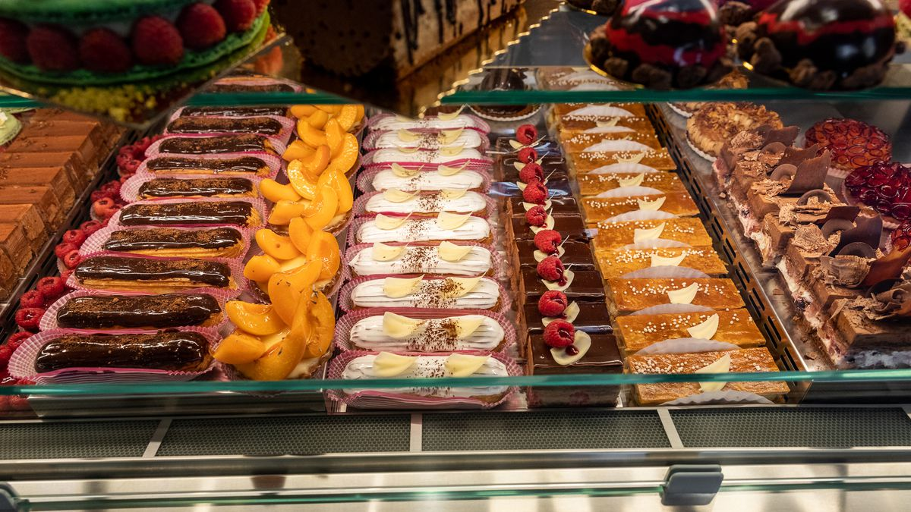
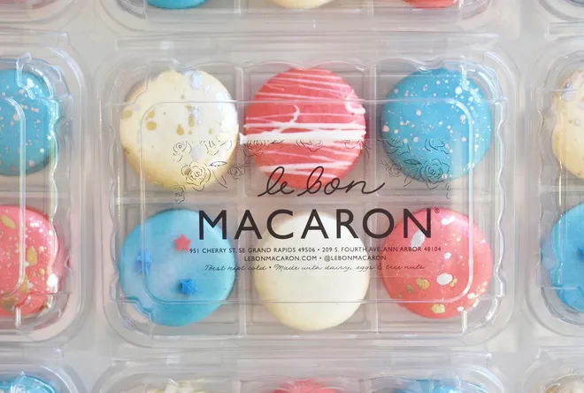
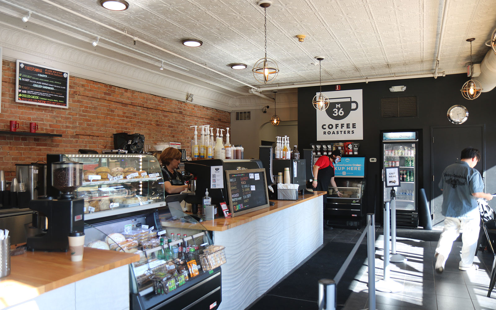
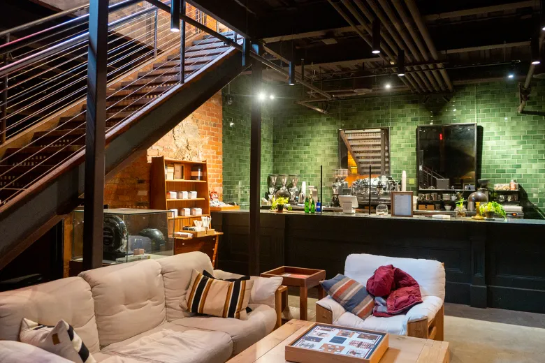
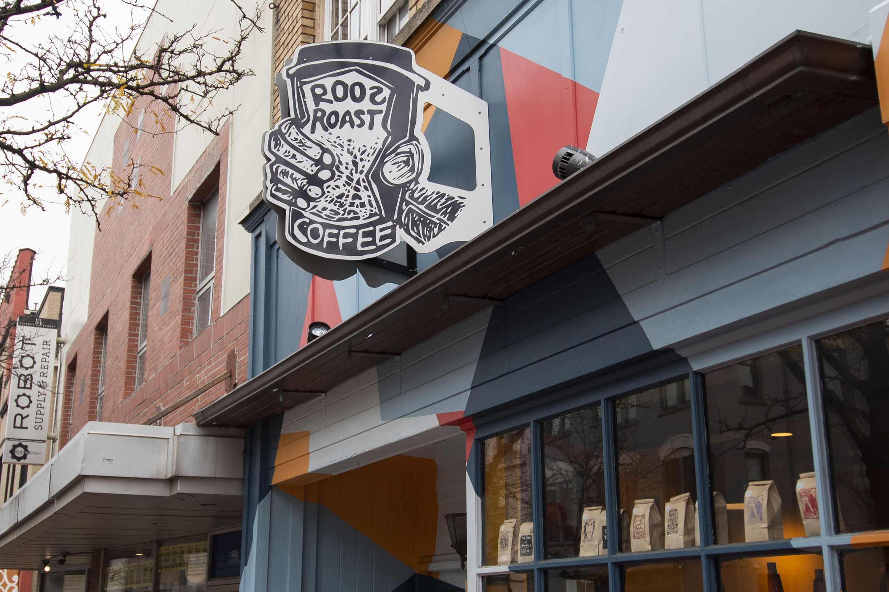
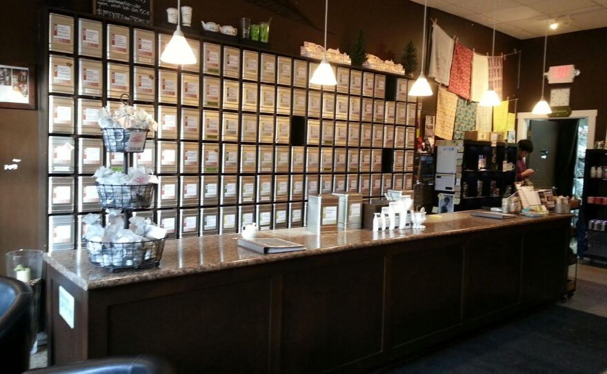

My Top Drinks Reccomendations
Ann Arbor is a city that knows how to quench your thirst! From the most refreshing iced teas to the most creative cocktails, this city has it all. Whether you're a student, a local, or a visitor, you'll find something to satisfy your cravings. Here are my top picks for the best drinks in Ann Arbor.
Cannelle
Indulge in the quintessential French experience at Cannelle, where every sip of their authentic French hot chocolate is like wrapping yourself in a blanket of luxury. Perfect for those chilly Michigan days, this rich and velvety drink is a decadent treat that will warm both body and soul. Let the smooth texture and intense cocoa flavor transport you to the streets of Paris, where every corner boasts a charming café serving up moments of indulgence.
Le Bon Macaron
Elevate your afternoon with an iced lavender latte from Le Bon Macaron. Delightfully floral and refreshing, this beverage is the perfect pick-me-up to brighten your day and tantalize your taste buds. Sip slowly and savor the subtle notes of lavender dancing harmoniously with the creamy richness of the latte, creating a symphony of flavors that will leave you craving more.
Cafe M-36 (Formerly Espresso Royale)
Savor the invigorating kick of a Ginger Dragon at Cafe M-36. This concoction, once a favorite at Espresso Royale and now exclusively available at M-36 after the post-COVID rebranding, is the perfect remedy for a cold day or a quick boost of vitality. Its unique blend of flavors is sure to make it your new go-to drink. With each sip, feel the warmth of ginger spread through your body, invigorating your senses and energizing you for whatever the day may hold.
Shinola Cafe
Discover the perfect Dirty Chai at Shinola Cafe, where each sip is a revelation of carefully brewed coffee and aromatic spices. Renowned for their meticulous attention to the bean, Shinola offers a sensory experience like no other. Step inside and immerse yourself in an atmosphere that whispers of a bygone era, a hidden gem in the heart of Ann Arbor. Take a moment to appreciate the intricate dance of flavors as the chai spices mingle with the richness of the coffee, creating a harmony that is both comforting and invigorating.
Roos Roast
Keep it classic with a perfectly crafted latte from Roos Roast. Known for their impeccable coffee, Roos lets the quality of their espresso shine through in every sip. Embrace simplicity and let the rich flavors speak for themselves in this timeless favorite. Whether you're starting your day or taking a break in the afternoon, Roos Roast's latte is sure to hit the spot, offering a moment of comfort and contentment in every cup.
Teahaus
Unplug and unwind with a refreshing mint tea at Teahaus. Embracing a culture of connection, this eclectic spot encourages patrons to leave technology behind and engage with each other in person. Pair your tea with a good book and lose yourself in the serene atmosphere of this Ann Arbor gem. Let the calming aroma of mint envelop you as you take a moment to disconnect from the chaos of everyday life and reconnect with yourself and those around you.